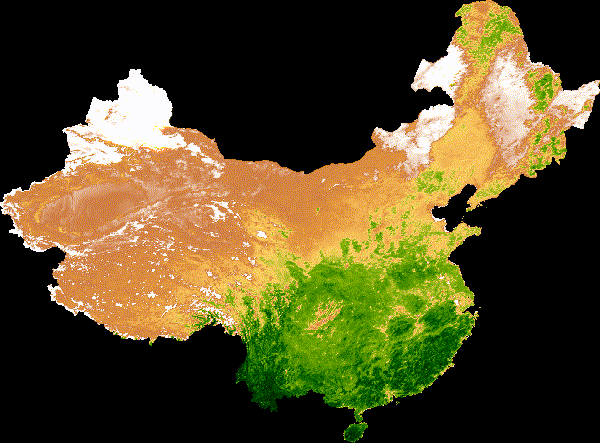
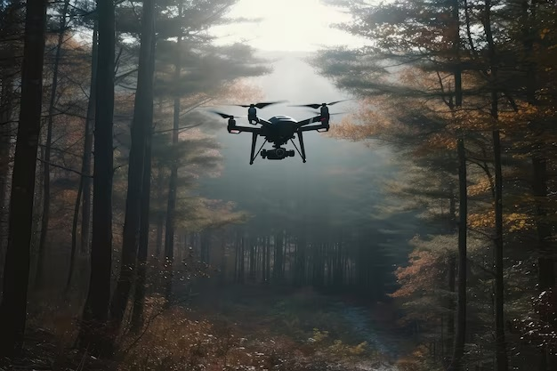
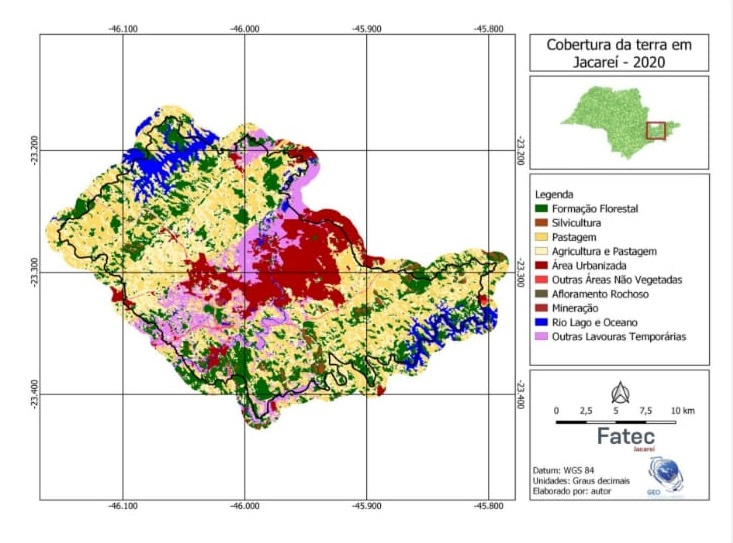

Quem somos nós

A Sintrópica Consultoria é uma empresa comprometida com a promoção de soluções inovadoras e sustentáveis nas áreas ambiental e agrícola com o foco no geoprocessamento. Nossa missão é contribuir para a transição do seu negócio em direção a práticas mais verdes e ecológicas. Para isso, integramos estudos acadêmicos, técnicas de produção sustentável e tecnologias emergentes no mercado, criando soluções personalizadas que atendam às suas necessidades. Acreditamos na eficiência, e na responsabilidade socioambiental.
Produtos
Oferecemos soluções ambientais e de geoprocessamento personalizadas de todos os tipos para negócios. Adaptamos modelos agrícolas de produção, em diferentes contextos. Auxiliamos com o processamento de imagens usando IA e algoritmos para escalar processos em massa, oferecemos sites com mapas interativos que facilitam o planejamento de tomadores de decisões. Também colaboramos pesquisadores, e instituições acadêmicas, oferecendo suporte especializado que atenda aos modelos da produção acadêmica.
O Time
A Sintrópica Consultoria fundada pelo estudante de geoprocessamento Renan Ambiel, nos interessamos pelas área das tecnologias agrícolas, ambientais, e das geociências. Somos movidos pelas novas tecnologias, nos estruturamos em inovações acadêmicas, e defendemos a ideia da harmonia entre esses dois eixos com o impulso do mercado é nosso próximo passo como uma sociedade inteligente.
Pesquisa científica

Gifs de séries temporais
Um de nossos eixos de pesquisa são a elaboração de gifs de séries temporais em NDVI ao longo do um ano, voltados para análises ambientais, no exemplo acima estuda-se o quanto o deserto de Gobi da china avança (inverno) e recua (verão) ao longo do ano de 2023.
Pesquisa Acadêmica
O ramo da pesquisa é padronizado, com suas peculiaridades e normas técnicas bem específicas. Executar scripts em linguagens de programação como o R ou python e introduzir os resultados em seu artigo pode ser uma tarefa árdua para um pesquisador. Nós nos encontrando de forma ideal a auxiliar projetos acadêmicos Temos conhecimento metodologias científica, e uma de nossas especialidades são o tratamento de dados, com gráficos e tabelas em python e mapas com legendas no QGIS.
Pesquisa Ambiental e Agrícola
Dentro do eixo da pesquisa nos aprofundamos mais nas áreas de temas ambiental e agrícola, focando em análises de imagens de satélites nós podemos trabalhar em equipe com o seu projeto usando metodologias de machine learning para mapas de uso e cobertura do solo, índice de queimadas, secas e cheias de rios, índice de pluviosidade, cálculos perdas florestal. Ou então podemos gerar mapas temáticos a partir de suas próprias análises.
Valorizamos profundamente o trabalho da comunidade científica, reconhecemos a capacidade de inovação da área, e de como ela é essencial para resolver os desafios atuais. No entanto, a divulgação do conhecimento científico muitas vezes não alcança o público em geral, presa em bolhas sociais. Para resolver essa lacuna, também oferecemos várias opções para a comunicação, e divulgação digital.
Modelo WEBGIS
Na Sintrópica Consultoria, desenvolvemos soluções WEBSIG que integram mapas interativos diretamente em páginas web, acessíveis tanto em desktops quanto em dispositivos móveis. Esses mapas são projetados para facilitar o planejamento e a tomada de decisões, oferecendo uma visualização rica e informativa.
Utilizamos bibliotecas como Leaflet e OpenLayers, que permitem criar interfaces de mapa responsivas e interativas. Projetados com representação dos dados geoespaciais, os mapas incluem imagens de satélite, layers de pontos e polígonos, com controle de camadas, legendas e rótulos, além de funcionalidades como destaque ao passar o mouse, pop-ups interativos, zoom em features ao clicar, mecanismos de pesquisa, entre outros, proporcionando uma experiência dinâmica para o usuário.
Produto final
Como resultado final entregamos um mapa interativo que facilita o planejamento e a tomada de decisões, garantindo uma visualização rica e informativa. , seja para gestão ambiental, planejamento agrícola, análise de dados, ou pesquisa acadêmica nossas soluções são adaptadas ao seu projeto.
Python

No exemplo acima estamos trabalhando com registros de votação de 2022, uma quantidade massiva de dados com mais de 5 mil linhas sendo processadas e plotadas em formato de mapas. A linguagem tem muita eficiência no tratamento de grandes volumes de dados, plotagem de mapas e gráficos, além de ser ótima ferramenta no agendamento de tarefas e pipelines.
Ciência de Dados Geoespaciais
Dados geoespaciais muitas vezes são extensos como lista de municípios, localização de imóveis, e com variáveis com geometrias difíceis de serem lidas por programas, nesse contexto bibliotecas como Geopandas, rasterio, Fiona surgem como facilitadores na manipulação e análise dos dados. A linguagem também conta com diversos frameworks e ambientes de desenvolvimento como o jupyter notebook o Google colab ou o próprio QGIS com o seu terminal python que permitem a automatização de tarefas e scripts.
Automatização de Tarefas
A execução scripts e repetição de tarefas permite que os profissionais se concentrem na interpretação dos resultados, enquanto processos repetitivos são gerenciados de forma automatizada. A automatização de tarefas se apresenta uma etapa essencial que evita erros humanos e intensifica a produção, a ideia não é demitir funcionários mas sim evitar trabalhos tediosos e posicioná-los em cargos onde a interpretação humana é mais relevante, proporcionando assim melhores condições de trabalho.
PDI & IA
Acima um exemplo de dois mapas um NDVI outro em RGB dividido por um menu deslizante, produzidos pela ferramenta Google Earth Engine.
IA e computação em nuvem
A proposta que a computação em nuvem traz é de otimizar o tempo processamento e aumentar o desempenho computacional, sendo uma ótima opção para equipes com recursos limitados, reduzindo de gastos de energia e custos com hardware.
As técnicas de inteligência artificial tem eficiência na classificação de imagens com alta diversidade de classes ou em resultados enviesados devido à natureza dos dados. De modo geral, as técnicas resultam em interpretações mais precisas e resultados mais parametrizados. Para quem é da área de geo, o google oferece uma ferramenta para análises espaciais.
Earth Engine & Pesquisa
A ferramenta google earth engine (GEE) é um framework na linguagem javascript com uma documentação própria e bem didática uma excelente opção para pesquisadores, atividades governamentais ou educacionais pois oferecem vastos catálogos de dados de satélites e funcionalidades avançadas que facilitam a sua análise. Os pesquisadores podem explorar séries temporais, calcular índices de vegetação, monitorar mudanças ambientais, visualização dinâmica de coleções de imagens, além aplicação de mosaicos e redutores.
Em seu uso mais aprofundado podemos mexer com IA, programação orientada a objeto, e montar apps interativos. Com sua computação em nuvem e processamento em paralelo é ideal para projetos de alta escalabilidade além disso a ferramenta oferece a divulgação dos seus resultados para o compartilhamento e comunicação em um formato de página web.
drones

Um dos eixos da nossa equipe é a agricultura de precisão, buscamos soluções para as anomalias climáticas e eventos extremos combinando uso de novas tecnologias à formas de cultivo mais sustentaveis.
Agricultura Sintrópica
A agricultura sintrópica, fundamentada nos estudos de Ernst Götsch, simula processos naturais para promover biodiversidade e regeneração dos ecossistemas. Integrando diversas espécies de plantas e animais, a prática melhora a fertilidade do solo, qualidade da água, e do ar no microclima. O pesquisador segue uma linha da agroecologia semelhante a Ana Primavesi
Ana Primavesi, uma das mais importantes pesquisadoras da agroecologia, enfatiza a ideia de que solo é um sistema vivo, e que as espécies convivem em equilíbrio em sua cadeia alimentar, as pragas e espécies invasoras significam uma desarmonia entre as espécies indicando de que ele está doente.
Estamos presenciando um adoecimento de modo geral da população, cada vez estamos mais dependentes de remédios para nossos problemas de saúde, talvez devêssemos olhar para a raiz do problema e de como a agroecologia traz uma solução para esse problema, diante disso, como podemos adaptar as produções em massa com as técnicas ecológicas?
Agricultura de Precisão
A combinação da agricultura de precisão com a agroecologia promove uma agricultura mais sustentável como modelo de agricultura para o futuro, o uso de VANTs na agricultura permite um monitoramento preciso do solo e dos cultivos, possibilitando a aplicação localizada de correções e fertilizantes. Ao integrar essa tecnologia com os princípios da agroecologia, os agricultores podem gerenciar os recursos como a agua de maneira conciente, respeitando os ciclos naturais do solo e promovendo a biodiversidade. O modelo melhora a eficiência na produção, ao mesmo tempo em que minimiza lixiviação, a erosão, e evita contaminação de lençóis freáticos. Assim, a combinação da agricultura de precisão com a agroecologia promove uma agricultura mais sustentável.
Recuperação de Áreas Degradadas
As áreas degradadas representam uma oportunidade valiosa no mercado de créditos de carbono, a agricultura sintrópica, ao promover a biodiversidade e restaurar o solo, contribui para o sequestro de carbono. Um exemplo respeitado na área é a iniciativa Conservador da Mantiqueira operando no mercado de crédito de carbono que restauram áreas degradadas e nascentes, geram renda adicional às comunidade e proprietários locais enquanto presta um serviço ambiental. Além do mercado de ações operando no ramo ambiental existem também diversos programas governamentais para pagamentos por prestação de serviços ambientais, apresentando um novo modelo de negócio que vem surgindo no mundo em prol da sustentabilidade.
mapas temáticos

Os mapas temáticos são uma ferramenta essencial para a visualização de dados geográficos. Muitas vezes dadas em tabelas ou gráficos não ficam claros, e uma interpretação visual simplifica as coisas.
Por meio de diferentes camadas, podemos representar dados sobre uso do solo, distribuição populacional, áreas de preservação e muito mais.
Mapas Distribuição Populacional
A distribuição populacional é um aspecto fundamental para entender dinâmicas sociais e econômicas em uma região. Ao mapear a população, é possível identificar padrões de urbanização, áreas de alta densidade habitacional e lacunas de serviços essenciais. Esses dados ajudam a embasar políticas públicas, direcionar investimentos em infraestrutura e otimizar a alocação de recursos, garantindo que comunidades em crescimento recebam o suporte necessário.
Mapas Topográficos
Os mapas topográficos são essenciais para a visualização detalhada da superfície terrestre, representando elevações, depressões e formas de relevo. Através de diferentes camadas, esses mapas fornecem informações sobre a geomorfologia de uma área, permitindo análises sobre drenagem, habitat e acessibilidade. Além disso, eles são cruciais para atividades como planejamento urbano, gestão de recursos naturais e áreas de Preservação permanente (APP).
Mapa de Uso e Cobertura do Solo
Os mapas de uso e cobertura do solo são ferramentas indispensáveis para compreender como os espaços são utilizados e quais tipos de vegetação predominam em uma região. Eles ajudam a identificar áreas urbanas, agrícolas, florestais e de preservação, permitindo uma análise crítica sobre as mudanças no uso da terra ao longo do tempo. Essa informação é vital para a elaboração de políticas de desenvolvimento sustentável, planejamento ambiental e monitoramento de alterações que podem impactar os ecossistemas locais.
blog de noticias

Nosso blog de noticias é um portal com as principais noticias que ocorrem ao redor do mundo geo trazendo a tona discussões pertinentes com opniões de cientistas sobre os temas.
O blog contempla notícias das novas geotecnologias do mercado, desastres naturais, mercado de credito de carbono, eventos climáticos extremos, noticias do agro, e muito mais. Vamos destrinchar e estudar cada um desses tópicos sobre o viés científico e ambiental.
Contato